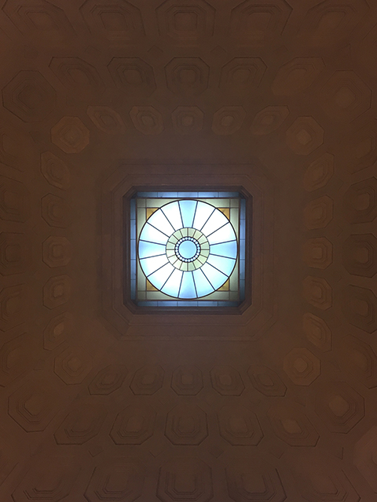
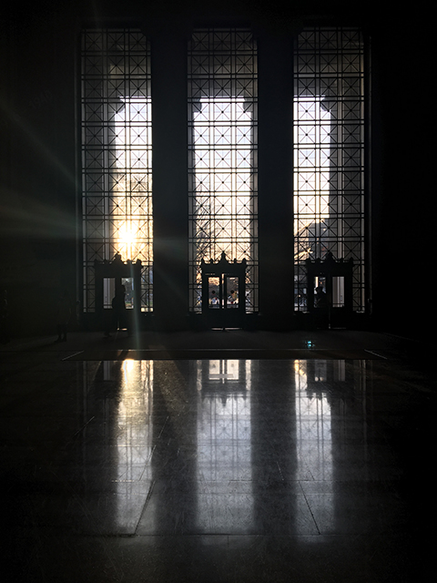
Barker Library
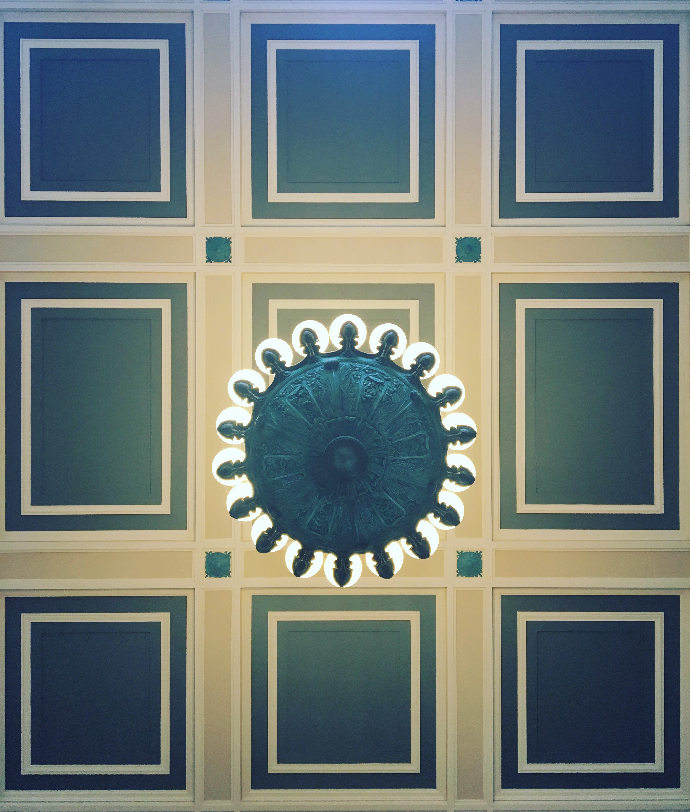

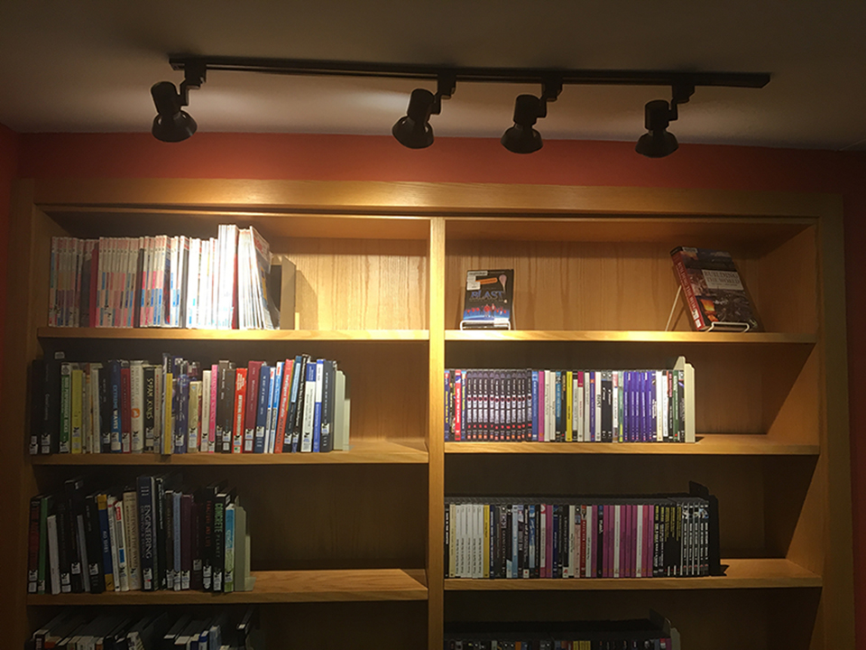
The Barker Engineering library is one of MIT's most signature spaces, both from the inside and the outside. From the outside, its dome stands out as a beacon to the city. It was relit in 2007 with 12 energy efficient lights, that use as much energy as two hair dryers.
From the inside, it offers a uniform cool appearance throughout the day. Students cannot realize time as they sit inside this library. The one thing I observed was how there were lights facing the bookshelves to ease the process of finding a book in a space with limited natural light.
Stata Center
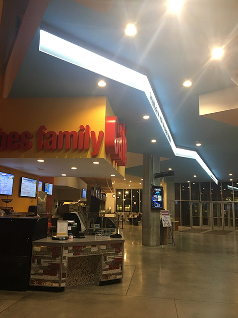
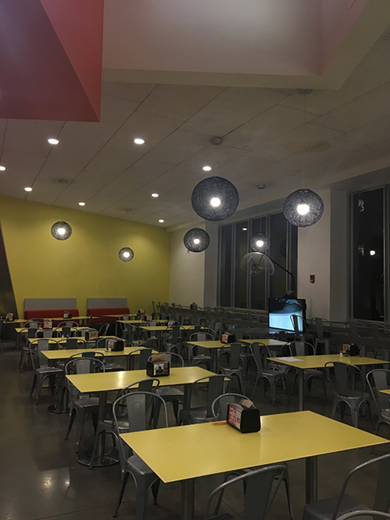
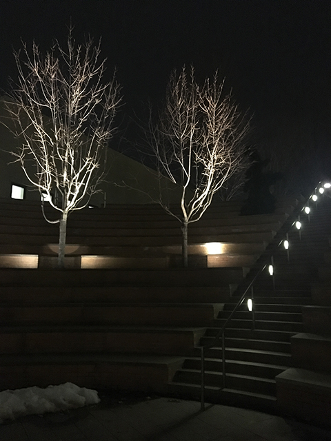
Media Lab
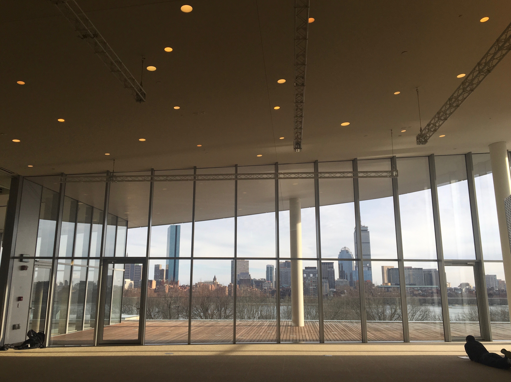
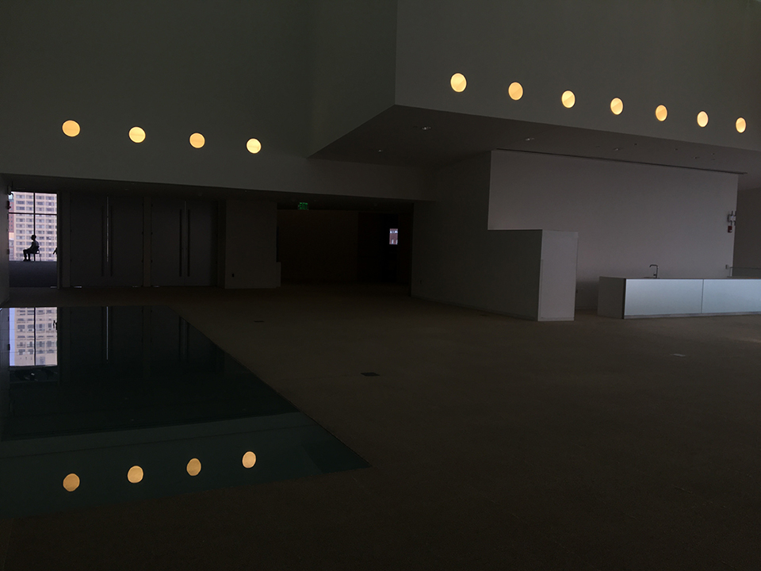
Miscellaneous
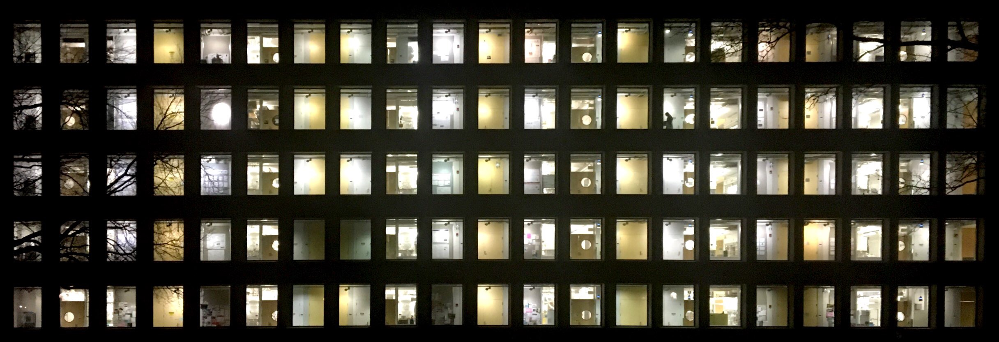

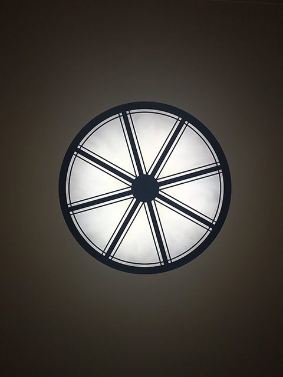
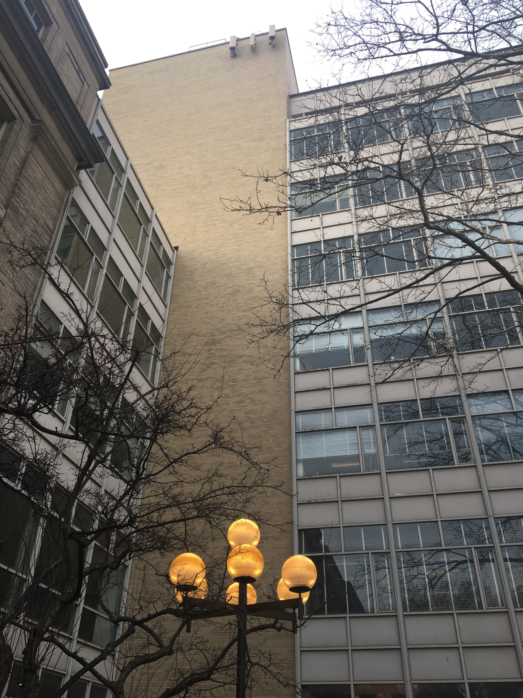
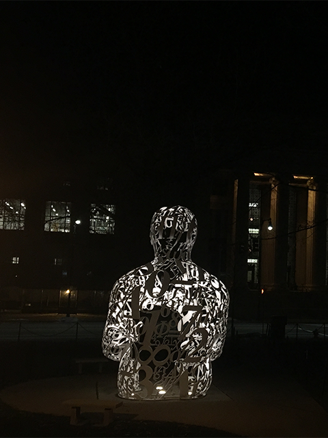